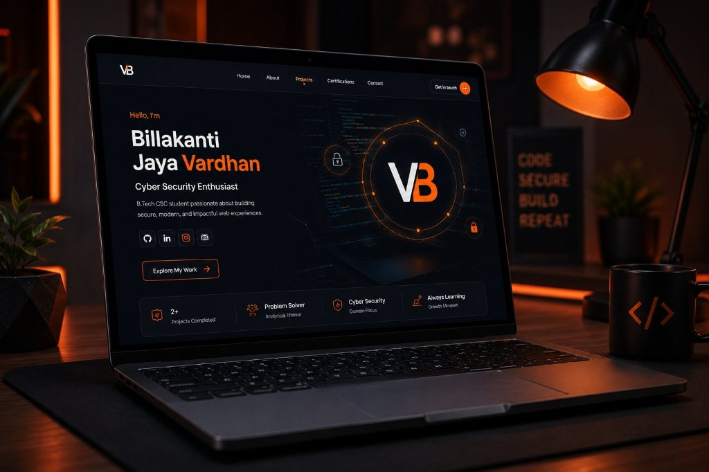
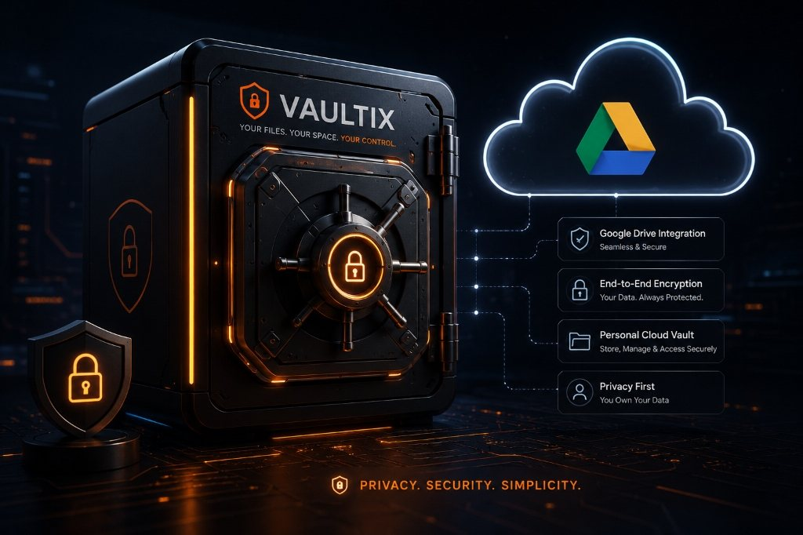
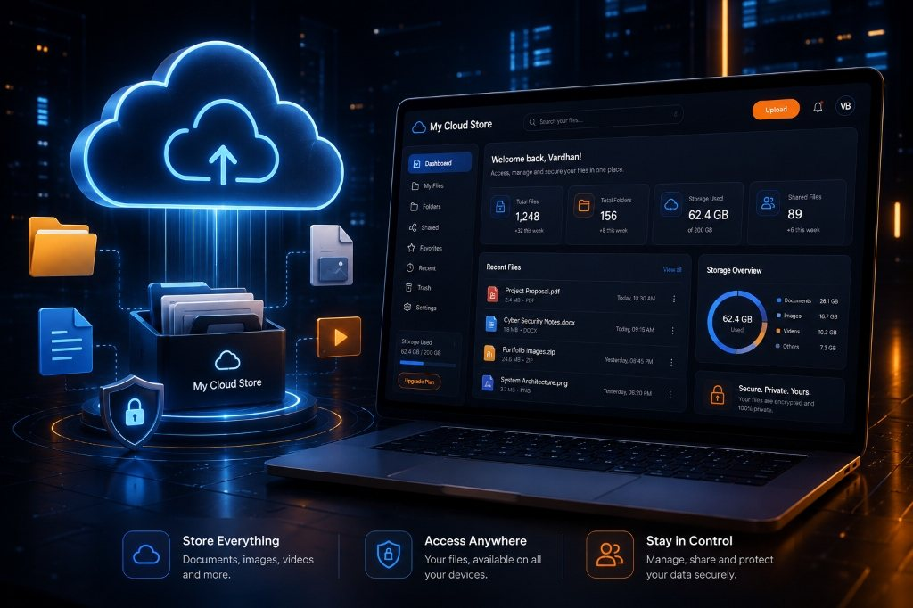
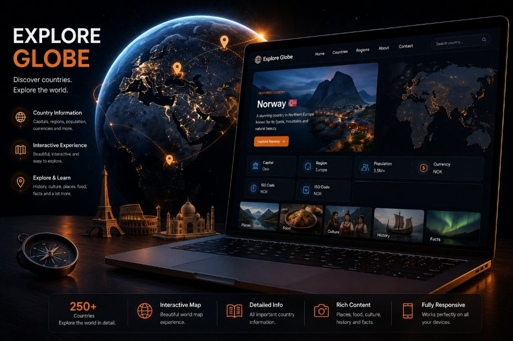
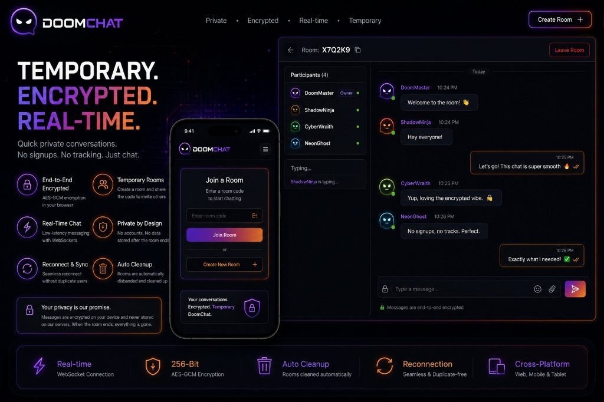
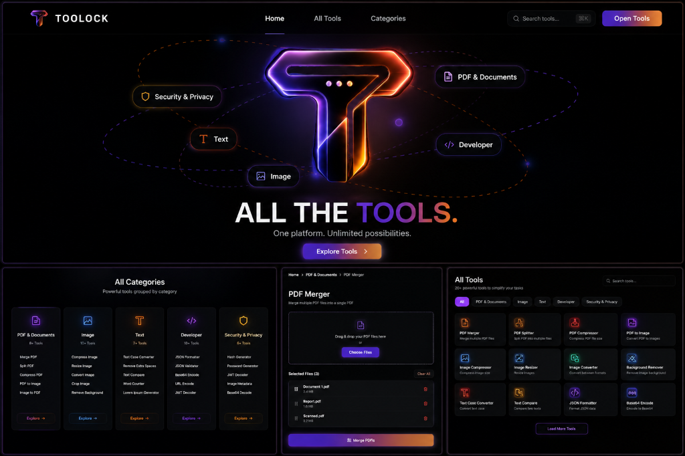

Projects I’ve Built
A collection of web, cybersecurity, privacy, cloud storage, and interactive projects designed and developed by Billakanti Jaya Vardhan.

Portfolio
A modern personal portfolio built to showcase my academic journey, technical skills, projects, certifications, and professional presence through a polished interactive experience with a premium dark visual identity.

VAULTIX
A secure personal cloud-storage platform that uses each user's Google Drive for file storage while providing authentication, organized file management, folders, favorites, notes, and a dedicated trash system.

MyCloudStore
A personal cloud-storage platform for uploading, organizing, searching, previewing, and managing files with folders, notes, trash management, and a PIN-protected Secure Vault.

Explore The Globe
An interactive 3D geography experience where users can explore a realistic Earth, select countries, and discover detailed information about their regions, culture, history, food, places, and facts.

DoomChat
A temporary, real-time web chat platform for private conversations without traditional user accounts. Features client-side AES-GCM encryption via Web Crypto API, WebSocket communication with hibernation, and room state management via Cloudflare Workers and Durable Objects.

Toolock
A premium all-in-one digital tools platform bringing PDF, image, text, developer, and security utilities into one responsive application with client-side file processing, extensible tool architecture, and an animated 3D visual experience.